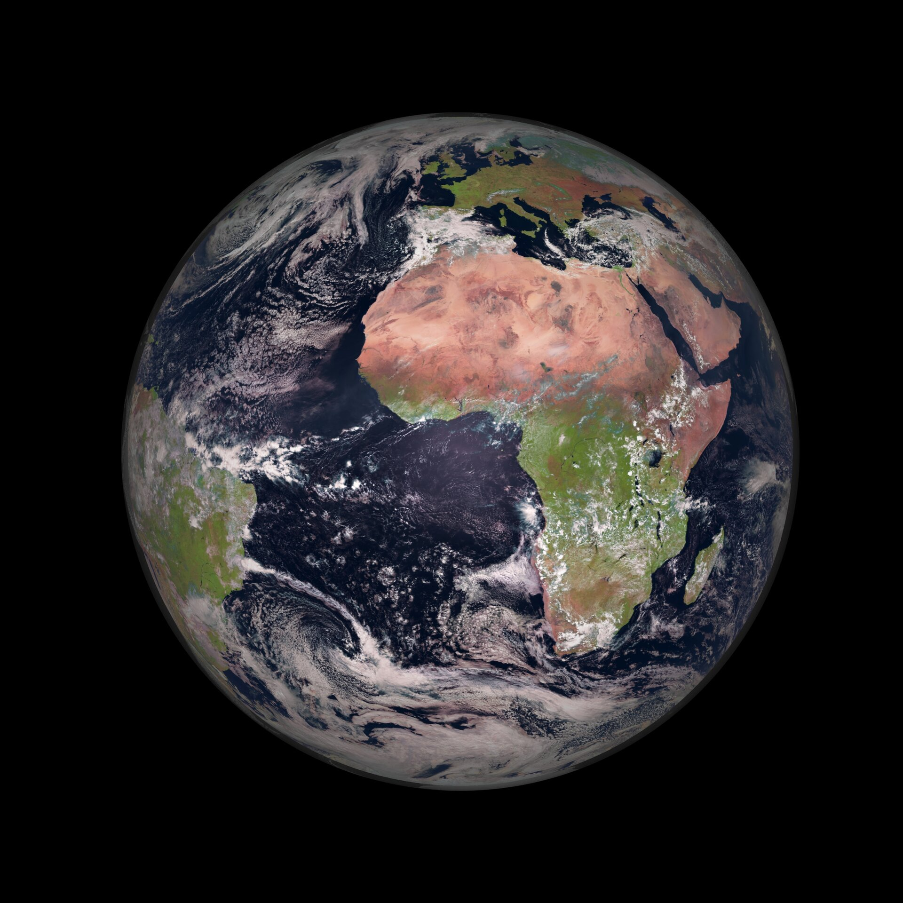

ما هو النظام الشمسي؟
النظام الشمسي هو مجموعة من الكواكب، الأقمار، الكويكبات، والمذنبات التي تدور حول الشمس. الشمس هي النجم المركزي الذي يوفر الضوء والطاقة اللازمة للحياة على الأرض.
يتكون النظام الشمسي من ثمانية كواكب رئيسية هي: عطارد، الزهرة، الأرض، المريخ، المشتري، زحل، أورانوس، ونبتون. كما يحتوي على الكواكب القزمة مثل بلوتو، ومجموعة كبيرة من الكويكبات والمذنبات التي تتحرك في مدارات حول الشمس.
الشمس تمثل حوالي 99.86% من كتلة النظام الشمسي، وهي مصدر الضوء والحرارة التي تجعل الحياة ممكنة على كوكب الأرض. يختلف كل كوكب عن الآخر من حيث الحجم، التركيب، والغلاف الجوي، مما يجعل كل كوكب فريداً.
صور من النظام الشمسي
كوكب الأرض
كوكب المريخ

كوكب زحل
فيديوهات عن النظام الشمسي
يمكنك مشاهدة فيديو يشرح النظام الشمسي من خلال الرابط التالي: شاهد الفيديو على يوتيوب